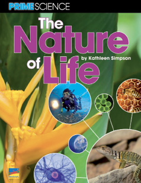
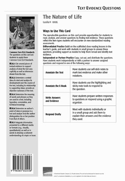

Informational Text
Earth’s Biosphere
The Nature of Life
Lexile® 1010L
Related Resources
Text-Dependent Comprehension
Scaffolded Reading and Comprehension
Other Titles in This Topic Set
Online Resources
Essential Question
Supporting Questions
Enduring Understanding
Next Generation Science Objectives
STEM Connections
ELA Strategies and Skills
Text-Dependent Comprehension Strategies
Vocabulary Strategies
Writing to Sources (p. 12)
What Makes This Text Complex? | |
Purpose and Levels ➍ | The purpose of the text is to define the common characteristics of living organisms and explain the processes and interactions of Earth’s complex biosphere. (pp. 3–6, 9)* |
Structure ➌ | The text includes: multiple text structures and modes of communication, explanatory text, procedural text, sidebars, diagrams, charts, and a graphic short. (p. 7)* |
Language Conventionality ➌ | Chapters include complex sentences and domain-specific, otherwise unfamiliar terms. (p. 8)* |
Knowledge Demands ➍ | The text assumes some prior knowledge of complex Life Science concepts. |
Qualitative text complexity dimensions from the CCSS are scored on the following scale:
➊—Low; ➋—Middle Low; ➌—Middle High; ➍—High
*Citations refer to pages within this teacher’s guide that address the specific text complexity.
First Read
Preview and Make Predictions SL.6.1b, SL.6.1c
Invite students to flip through the book and view photos, or project the whiteboard version of the text and preview the pages together.
Have students turn to the Table of Contents and read the chapter heads and supporting questions for each chapter.
Invite students to read the book description and the About the Author blurb on the back cover.
Ask: How do these features help you figure out what you’ll learn about in this book?
Collaborative Whole-Group Discussion SL.6.1b, SL.6.1c
Ask: Is a jellyfish a living, breathing organism, just like us? Why or why not? What are the characteristics of a living organism? What does it mean to be alive?
If your students need more support, use the Scaffolded Preview provided for each section.
Have students turn to pages 4–5, or display the pages on the whiteboard. Read aloud the text, or listen and follow along with the talking e-book in the whiteboard edition.
Invite students to quickly generate a list of questions they have about what makes something a living organism.
Choose the reading option that best meets the needs of your students.
For students who need more support with comprehension, consider scaffolding them into the on-level text using the PRIME Bridges Edition.
Read Chapter 1 RI.6.2, RST.6.2, SL.6.1
If necessary, use the Scaffolded Preview and Cognates for Essential Vocabulary to help students access the text.
Read aloud the supporting question on page 7: What is the most basic unit of life, and how can we define and describe it?
Set a purpose.
Say: As you read this chapter, you will be using a strategy called Double Entry Journal to help you identify the most basic unit of life and how we can define and describe it.
Display the Sample Double Entry Journal.
Say: The Double Entry Journal process is a form of note taking. As you read the book, write key concepts from the text that you think are important. Across from each concept, in the right column, write why the concept is important, or what the author’s purpose was in including it.
Read aloud pages 6–7 and model how you jot down key information using the Double Entry Journal format.
Have students create a Double Entry Journal chart on notebook paper, or distribute copies of BLM 1.
Instruct students to read page 8 and record key concepts in the second column. Circulate to monitor and provide help as needed. Remind students that they are taking notes as they read the chapter so they can identify and summarize the most important ideas when they have finished. Explain that they may use whatever concise note-taking method helps them capture the information easily and accurately (single words, phrases, abbreviations, symbols, drawings, etc.).
Summarize Key Concepts: Think and Write Together
Invite students to share their Double Entry Journals. What central ideas and key concepts did they list in the second column? Do the notes they recorded in the right column provide the details needed to understand these central ideas/concepts? Provide time for students to share and discuss their chapter summaries with the class.
Use the Sentence Frames to Support Collaborative Conversation for English learners.
As a group, construct a two- to three-sentence written summary of the key ideas in the chapter. If students need more support to summarize the text, explicitly model strategies for summarizing.
Model Summarizing
Say: When we summarize, we include only the most important information in a text. We look for the central ideas. We don’t include all of the details. Let’s summarize a section of this chapter together.
Reread the “Inside the Cell” section on page 10.
Say: There is a lot of information on this page. I ask myself, “What is the central idea this writer wants me to understand about cells?”
Allow responses. Support students to understand that the author wants readers to understand that cells are made up of different parts called organelles and that each organelle has a specific job to do, or function. The author provides details about what some of the organelles are made of and their consistencies so that readers have a more thorough description and understanding.
Say: In my summary, I will include only the central ideas. I will not include the details about what the organelles are made of or their consistencies, but I may include key parts and their functions.
|
Cells are made up of different parts, called organelles, and each organelle has a job to do. The cell membrane protects the cell by letting in nutrients and letting out waste. The nucleus controls the cell’s activities and floats in cytoplasm, another cell part. Chromatin is made up of DNA strands coiled around proteins. |
Sample Summary (Chapter 1)
Read Chapter 2 RI.6.2, RST.6.2
If necessary, use the Scaffolded Preview and Cognates for Essential Vocabulary to help students access the text.
Read aloud the supporting question on page 17: What processes define and sustain living organisms?
Set a purpose for the first read.
Say: As you read this chapter, continue using the Double Entry Journal to focus on the processes that define and sustain living organisms. Then we’ll collaborate to summarize the main ideas and details.
Have students create a Double Entry Journal chart on notebook paper, or distribute copies of BLM 1.
Review the note-taking process as needed.
Choose the reading option that best meets the needs of your students.
Summarize Key Concepts: Think/Pair/Write/Share
Invite students to share their Double Entry Journal with a partner and agree on the key ideas in the chapter. Explain that partners should collaborate to write their own two- to three-sentence summaries of the key information in the chapter.
Use the Sentence Frames to Support Collaborative Conversation for English learners.
Support students to reread their notes and/or the chapter and to differentiate between the writer’s key ideas and the supporting details she uses.
Review the definition of a summary.
Say: Remember, a summary is a short statement of the most important information in a text.
Bring students together and ask several pairs of students to read their summaries aloud. As a whole group, evaluate the summaries and identify any key information that was omitted. As needed, clarify students’ understanding of the supporting question.
As a group, construct a written summary of the key ideas in the chapter.
|
Living organisms share certain processes. They respond to stimuli. They also take in nutrients and gases while growing and changing. All living things maintain internal balance, or homeostasis. Finally, all living organisms reproduce, passing on their genes. |
Sample Summary (Chapter 2)
Read Chapter 3 and Conclusion RI.6.2, RST.6.2
If necessary, use the Scaffolded Preview and Cognates for Essential Vocabulary to help students access the text.
Read aloud the supporting question on page 28: How are organisms interconnected in the biosphere?
Set a purpose for the first read.
Say: As you read this chapter, continue using the Double Entry Journal to focus on how organisms are interconnected in the biosphere. Then we’ll collaborate to summarize the main ideas and details.
Have students create a Double Entry Journal chart on notebook paper, or distribute copies of BLM 1.
Review the note-taking process as needed.
Choose the reading option that best meets the needs of your students.
Summarize Key Concepts: Think and Write Independently
Give students a few moments to review their Double Entry Journal and to write their own two- to three-sentence summary of the key information in the chapter.
Use the Sentence Frames to Support Collaborative Conversation for English learners.
Bring students together, and ask several volunteers to read their summaries aloud. As a whole group, evaluate the summaries and identify any key information that was omitted. As needed, clarify students’ understanding of the supporting question.
As a group, construct a written summary of the key ideas in the chapter.
Reread the summary that your class has collaborated to write.
|
Biodiversity is essential because living organisms interact and depend upon one another for survival. Organisms interact in a variety of ways, from symbiosis to predation. Some living organisms develop adaptations to survive. A certain amount of competition for resources is also important in keeping the biosphere healthy and balanced. |
Sample Summary (Chapter 3/Conclusion)
Close Reading Option 1: Identify Text Structure: Sequence/Steps in a Process RI.6.5, RST.6.5
Model Finding Text Evidence
Display and read aloud the close reading question.
|
Throughout the book, the author uses sequential text to explain processes. What evidence in the text help you identify this text structure? |
Explain that the question asks the reader to find evidence in the text that help the reader identify the sequence-of-events/steps-in-a-process text structure.
Say: I will need to look for signal words that show a chronology, or order of events, or a sequence of steps in a process.
Reread page 12.
Say: In this section the author begins by explaining why cells divide. Then she describes the process, explaining that cells copy themselves by dividing into two parts. The word before at the beginning of the third sentence is a signal word that tells me something happens before the cells divide. When I read on, I learn that first the cell must replicate its DNA within the cell. This is confirmed later in the text when the author explains that cell division starts with every chromosome making a copy of itself. Recognizing sequential text will help me understand this and many other life processes described in this book.
Support Practice
Ask students to turn to page 21.
Collaborative conversation (turn and talk). Ask students to turn to a partner, reread page 21, and find additional evidence/terms in the text that signal the text structure.
Ask: What sequence signal words does the author use to explain this concept? What key idea does the sequence help you understand?
Bring students together and invite pairs to share the sequence they identified. Invite students to identify signal words and phrases or other evidence the author used to communicate the sequence. Agree upon the key idea based on this sequence.
Find Text Evidence Independently
Ask students to reread the first paragraph on page 22 to identify the sequence of events the author describes. Students should locate signal language in the text, record the sequence of events on a chart, and identify a key idea based on them.
Confer with individual students to support their independent close reading. Encourage them to explain how the text structure contributes to their understanding of processes that define and sustain living organisms.
Close Reading Option 2: Determine Word Meaning RL.6.4a, RL.6.4c, RL.6.4d, RST.6.4
Model Finding Text Evidence
Display and read aloud the close reading question.
|
What context clues help the reader understand the meaning of the word nucleus on page 10? |
Explain that the question asks the reader to find evidence in the text that help the reader define the word.
Say: This text uses words and phrases specific to the study of living organisms. Some are defined in context, but others are not. We have to look for evidence to help us define them. Sometimes the evidence are descriptions. We’re going to read closely to figure out the meaning of words using descriptions in context. Knowing how to do this will help us read many kinds of complex texts. Let’s pay close attention to the text where this word appears and look for descriptions to help us figure out the meaning.
Reread paragraph 1 on page 10. Highlight the term nucleus in sentence 4.
Say: I can figure out the meaning of this word using evidence in the sentence. This sentence defines a nucleus as “a sac that functions as the control center for the cell.” I can check my definition in the glossary if I’m unsure.
Support Practice
Display and highlight the term stimulus.
Set a purpose.
Say: Let’s reread the text where this word appears and look closely for descriptions to help us figure out the meaning.
Have students turn to page 19.
Collaborative conversation (turn and talk). Say: Turn to a partner. Reread
the first two paragraphs on the page, and write down words and phrases from
the text that help you define the word. Write down a definition of stimulus to share with the class.
Bring students together and ask several pairs to read aloud their evidence and definitions. Access a print or online dictionary to compare students’ definitions with those in a recognized reference.
Find Text Evidence Independently
Ask students to reread page 31 and write down evidence from the text that help them understand the meaning of the word producers. Students should write down their definition and check it against a dictionary definition. Confer with individual students to support their independent close reading.
Close Reading Option 3: Draw Inferences
RI.6.1, RST.6.1
Model Finding Text Evidence
Display and read aloud the close reading question.
|
For something to be considered a living organism, it must contain at least one cell. What statements from the text directly support this inference? |
Explain that the question asks the reader to find evidence in the text that supports a specific inference.
Say: I’m going to show you how I make inferences when I read. When we infer, we use information from the text to form an understanding that is not directly stated in the text. To draw an inference, I need to read the text very closely and think about what the author is saying. I also need to support the inference I make with evidence from the text to make sure that my inference is sound, or makes sense.
Reread page 9 while students follow along.
Say: We read that cells can be very small, like bacteria cells, or very large, like an ostrich egg. We also learned that cells can be lots of different shapes, and some are constantly changing shape. Finally, we read that while human bodies have trillions of cells, other organisms, like bacteria, have just one cell. Although the author doesn’t state it directly, I can infer that for something to be considered a living organism, it must contain at least one cell. What statements support this inference?
Display a blank graphic organizer like the one in the margin. Write in the inference and then ask students to recall the text evidence that directly supports the inference.
Complete the graphic organizer.
Ask: What is another inference you can draw from the text and support using text evidence?
Support Practice
Read aloud the text on page 17 as students follow along. Display a graphic organizer like the sample in the margin.
Collaborative conversation (turn and talk). Say: Think about the facts you read in the text. Use the evidence in the text to make an inference. What inference can you make from the evidence? Talk to your partner, and complete the graphic organizer.
Find Text Evidence Independently
Ask students to reread paragraph 3 on page 35. Have them make an inference about why plants and animals acquire physical adaptations.
Ask: How did making inferences as you read help your understanding of the concepts?
Close Reading Option 4: Answer Text Evidence Questions RI.6.1, RI.6.2, RI.6.4, RST.6.1
Draw Inferences
Display and read aloud the close reading question.
|
What evidence supports the inference that photosynthesis and respiration help keep gases in the atmosphere in balance? |
Text Evidence: “A by-product of photosynthesis is oxygen, which is used by the animals and plants in respiration. Respiration and photosynthesis are processes that recycle important gases in the biosphere. Oxygen and carbohydrates yield energy, carbon dioxide, and water in respiration. Carbon dioxide, energy (solar), and water yield carbohydrates and oxygen in photosynthesis.” (p. 20) RI.6.1
Identify and Determine Central Idea and Key Details RI.6.2
Display and read aloud the close reading question.
|
Find text evidence that supports the claim on page 11 that life would not be possible without proteins. |
Text Evidence: “Proteins play important roles in almost everything that happens inside the cell.” (p. 10) “Proteins do lots of jobs because they are part of so many organelles. Cells use proteins to repair themselves.”; “carry things through the cell”; “allowing waste to be removed”; “trigger chemical reactions”; “help cells fight off disease.” (p. 11) RI.6.2
Determine Word Meaning
Display and read aloud the close reading questions.
|
How is the word consumer used in this book? What context clues help the reader understand the meaning of the word? |
Definition: an organism that eats other organisms
Text Evidence: “To get needed energy, some organisms must eat, or consume, other organisms. There are a few different classes of consumers .” (p. 32) RI.6.4
Build Language and Vocabulary
Extend Language Concepts: Present Participles L.6.1, L.6.3
Read the following sentence from Chapter 1, page 5:
|
“When a prey touches its tentacles, its stinging cells react by shooting tiny poisonous harpoonlike barbed threads.” |
Say: We can see several terms in our book that are present participles. Present participles are words that end with -ing and describe action that is happening. Sometimes present participles are used as adjectives to describe nouns. In this sentence, stinging cells is a present participle phrase. Stinging is an adjective that describes cells. At other times, present participle words are used with verbs such as am or are. For example, you might say, “I am waiting for the bus” or “We are waiting for the bus.”
Have students work in pairs to look through the book for additional examples of present participles. Ask students to share their findings. Monitor and provide feedback as necessary. Record the present participles on a chart to refer to throughout the rest of the unit.
Turn and talk. Challenge partners to compose other oral sentences with present participles based on information in the text. Have partners share their sentences with the rest of the class and explain how the present participles affect their sentences.
Extend Language Concepts: Prepositions (Time and Place) L.6.1
Read the following sentence from page 5:
|
“In the warm water off the Atlantic coast of the United States, a moon jellyfish, Aurelia aurita, swims near the surface.” |
Say: In this text, there are many prepositional phrases with the word in that are used to indicate a location or a point in time. In the sentence I just read, the word in is used to give a location: “in the warm water.”
Read the following sentence from page 8:
|
”In 1665, he published a book about his findings, titled Micrographia.” |
Say: In this sentence, the preposition in is used to tell the year in time that the book was published.
Have students work in pairs to find more examples of the preposition in used for time and location. Have them list the phrases in which the preposition was used. As students share their findings, record them on chart paper under the title “Examples of Prepositions.”
Independent Learning
Reading, Writing, Speaking, and Listening
Practice Finding Text Evidence
RI.6.1, RI.6.2, RI.6.4, RI.6.6, RI.6.7
Have students work independently or with a partner to answer questions that require them to find evidence in the text using the Text Evidence Question Card for this book.
Writing to Sources W.6–6.1, W.6–6.2, W.6–6.3, W.6–6.4, W.6–6.5, W.6–6.6
Use one of the text-dependent writing prompts below, or create one of your own, to give students the opportunity to demonstrate their understanding of the concepts covered in the text. Rubrics to help you evaluate students’ writing are available in the Digital Teacher’s Guide (BenchmarkUniverse.com).
Argument prompt. Write a clear, well-organized argument to support the following claim: Living organisms all carry out the same essential processes in order to sustain life. Provide at least three reasons to support the claim, and cite evidence from the text to support each reason. Make sure that your argument has a clear introduction and concluding section.
Informative/explanatory prompt. Using the information provided in the text, write a short procedural text that explains the stages of one of the processes that living things carry out in order to grow and survive.
Narrative prompt. Using the introduction and conclusion as a model, write a fictional narrative about the experiences of a colony of moon jellyfish. Your account should be based on factual information in the text.
Collaborative Research W.6–6.7, W.6–6.8, W.6–6.9
Have students collaborate to complete the research project outlined on the inside back cover of the text. Use the research project as a context in which to support students’ online research skills and to strengthen students’ presentation skills by requiring them to present their findings formally.
Closed-Book Content Assessment RST.6–6.7, RST.6–6.8
You may wish to have students complete a formal content assessment available in this guide (BLMs 2 and 3) and online. This assessment helps you evaluate students’ understanding of the standards-based concepts developed in the text. More information about the question types and an answer key are also available online.
An answer key is provided on page 13 of this guide.
Answer Key
Content Assessment
1. Sample answers: make copies of their cells; replicate their cells; undergo cell division
2.
3. Sample answer: A protein is a molecule made up of amino acids. Cells use proteins to carry out different functions, such as to repair or divide themselves, transport materials through the cell, trigger chemical reactions, or fight off disease. Life would not be possible without proteins.
4. A correct answer will include three of the following: response to stimuli; ingestion, or taking in food and gases to meet their needs; growth; maintaining homeostasis; reproduction; passing on genes to offspring; adaptation.
5. Sample answer: Plants take in the carbon dioxide that animals produce to manufacture high-energy compounds called carbohydrates. They do this by chemically combining carbon dioxide with water and solar energy in a process called photosynthesis. A by-product of photosynthesis is oxygen, which is used by the animals and plants in respiration.
6. Answers will vary.
7. A correct answer will include three of the following: mutations; genetic drift; gene flow; natural selection.
8. Sample answer: Food chains are too simple to describe what happens in most ecosystems, which are complex communities that support countless species. A food web shows how food chains interact and how energy flows.
9. Answers should include three of the following: conserve resources; reduce garbage and pollution; use renewable resources; recycle; outlaw overhunting and overfishing; establish nature preserves to protect the environment and endangered species; educate people about the importance of biodiversity.
10. Summary: The biosphere includes all of the living things on Earth. All living organisms are made up of cells and carry out certain life-sustaining processes. These processes include growth, reproduction, and maintaining homeostasis. Plants and animals are made up of complex eukaryotic cells, while simpler organisms, such as bacteria, are made up of prokaryotic cells. Cells all have specific functions and include different organelles, which are made up of proteins, which also have specific functions. The nucleus is the control center of the cell and contains DNA, which is copied and passed on during cell division and reproduction. Organisms in an ecosystem inherit certain traits and adaptations that enable them to survive in their environment. These characteristics allow for diversity in an ecosystem. Each ecosystem includes complex communities of organisms that have certain roles. Producers, such as plants, use the process of photosynthesis to make their own food. Consumers eat producers and other consumers. Decomposers eat waste and dead organisms.
Teacher’s Guide
These interactive resources are available through a subscription
to BenchmarkUniverse.com.
LEXILE® is a trademark of MetaMetrics, Inc., and is registered in the United States and abroad.
Common Core Standards © Copyright 2010. National Governors Association Center for Best Practice and Council of Chief State School Officers. All rights reserved.
© Benchmark Education Company, LLC. All rights reserved. Teachers may photocopy the reproducible pages for classroom use. No other part of the guide may be reproduced or transmitted in whole or in part in any form or by any means, electronic or mechanical, including photocopy, recording, or any information storage or retrieval system, without permission in writing from the publisher.
STEM = Science, Technology, Engineering & Mathematics
|
Support for English Learners |
|
Support students to access the text by orally introducing academic vocabulary, language, and concepts. |
|
Scaffold the Reading
|
|
Scaffolded Preview Introduction Pages 4–5. The introduction describes a moon jellyfish. We learn how it moves and reacts. Do you think the moon jellyfish is alive? |
|
Support for Struggling Readers |
|
Support students to access complex text by having them first read the PRIME Bridges edition. |
The Nature of Life Teacher’s Guide
© Benchmark Education Company, LLC
© Benchmark Education Company, LLC
First Read
The Nature of Life Teacher’s Guide
|
Support for English Learners |
|
Scaffolded Preview Chapter 1 Page 7. What does it mean to be alive? (Allow responses.) We will find out how scientists define life. Page 8. Look at the photos. What do the photos show? Pages 10–11. What do these diagrams show? Pages 12–13. Why do you think cells divide? |
|
Cognates (English/Spanish) biosphere/la biósfera (page 6) membrane/la membrana (page 10) nucleus/el núcleo (page 10) organelle/el orgánulo (page 11) protein/la proteína (page 10) |
|
Page Number |
Text |
Importance |
|
6 |
The biosphere includes all parts of Earth that support life. |
defines biosphere |
|
7 |
Living things are made up of cells. The cell is the most basic unit of life. |
explains what all living things have in common |
Sample Double Entry Journal Chart
First Read
|
Support for English Learners |
|
Sentence Frames to Support Collaborative Conversation Based on my notes, I know _____. Based on my notes, the chapter’s central idea is _____. An important concept from this chapter is _____. |
|
Support for Struggling Readers |
|
Support students to access complex text by having them first read the PRIME Bridges edition. |
First Read
|
Support for English Learners |
|
Scaffolded Preview Page 17. What do all living things have in common? Allow responses. |
|
Cognates (English/Spanish) diversity/la diversidad (page 23) inherit/heredar (page 24) photosynthesis/la fotosíntesis process/el proceso (page 17) stimulus/el estímulo (page 19) |
|
Sentence Frames to Support Collaborative Conversation Based on my notes, all living organisms have _____. Based on my notes, the chapter’s central idea is _____. |
First Read
|
Support for English Learners |
|
Scaffolded Preview Chapter 3 Page 30. What does the pie chart illustrate? (Allow responses.) The pie chart shows the amount of each living thing on Earth. Pages 31–32. What do we do to get the energy we need to live? (Allow responses.) Are we producers or consumers? Page 33. Look at the food web. A food web shows how the animals in an ecosystem interact. We will read about a marine food web. Conclusion Pages 42–43. This conclusion answers the question from the introduction. We can infer the answer from the evidence the author provides. |
|
Cognates (English/Spanish) adaptation/la adaptación (page 35) producer/el (la) productor(-ora) (page 31) |
|
Sentence Frames to Support Collaborative Conversation Based on my notes, the chapter’s central idea is _____. Diversity among species is important to the biosphere because _____. |
Close Reading and Analysis
Close Reading Options
Support students to dig deeper into the text. Choose one or more of these close reading options, or choose an alternate focus that addresses students’ needs.
Routine for Finding
Text Evidence
1. Read the question carefully.
2. Ask yourself: What words in the question help me know what evidence to look for?
3. Reread the text to find the evidence.
4. Evaluate the evidence. Ask yourself: Does the evidence I found help me answer the question? Do I need more evidence?
5. Use the evidence to answer the question.
6. Ask yourself: Does my evidence support my answer?
|
Order |
Step |
|
1 |
Internal temperature gets too high. |
|
2 |
Signal informs brain that there is increase in temperature. |
|
3 |
Brain responds with signals |
|
4 |
Skin gets flushed from blood moving to surface of skin. |
|
5 |
Body returns to normal temperature. |
|
Key Idea |
|
|
Balancing temperature is one way the body maintains homeostasis. |
|
Sample Sequence/Steps in a Process Graphic Organizer
Close Reading and Analysis
Close Reading and Analysis
|
Text Evidence |
|
The number of cells varies in living organisms from one to the trillions. |
|
Humans have trillions of cells, while bacteria have just one cell. |
|
Inference |
|
For something to be considered a living organism, it must contain at least one cell. |
Sample Draw Inferences
Graphic Organizer
➧
Close Reading and Analysis
Extend Meaning
|
Examples of Present Participles |
|
Page 7. “Living things react to stimuli and pass on traits from one generation to the next.” Page 23. “The pollinator moves on to the neighboring flower . . .” Page 24. “Perhaps in half a million years, big ears will help humans hear fast-moving jetpacks in time to move out of the way . . .” |
|
Examples of Prepositions |
|
Page 7. “In ancient Greece, a great thinker named Aristotle published his ideas on the subject.” Page 10. ”In a eukaryotic cell, DNA is housed inside the chromosomes found in the nucleus, a sac that functions as the control center for the cell.” Page 12. “In this step, the cell membrane pinches in on itself, separating nuclei, cytoplasm, and organelles equally between two halves.” |
Interactive Activities
Visit BenchmarkEducation.com for additional interactive personal learning activities.
Text Evidence Question Card
|
eukaryotic cell DNA inside the chromosomes in the nucleus makes up plant and animal organisms more complex |
both types of cells contain DNA can replicate |
prokaryotic cell DNA suspended in the cytoplasm makes up single-celled organisms like bacteria more primitive |
Name _______________________________________________________ Date _________________________________
The Nature of Life Teacher’s Guide
|
Page Number |
Text |
Importance |
Double Entry Journal
Directions: As you read the text, select a few phrases that you find meaningful or interesting. Write each phrase in the second column below, noting the page number in the first column. Then write why you chose it (a comment, question, connection made, or analysis) in the third column.
BLM 1
© Benchmark Education Company, LLC
The Nature of Life: Content Assessment
Directions: Use what you have learned about life in Earth’s biosphere to answer the questions below.
Chapter 1
1. For organisms to grow, repair themselves, or reproduce, they have to
2. Compare and contrast these two cell types by completing the Venn diagram below.
3. Write a brief explanation of what proteins are and why they are important to cell function.
Chapter 2
4. What are three processes that define and sustain living organisms?
5. Describe the chemical process of photosynthesis and how it relates to respiration.
|
eukaryotic cell |
both |
prokaryotic cell |
The Nature of Life Teacher’s Guide
BLM 2
© Benchmark Education Company, LLC
Name _______________________________________________________ Date _________________________________
6. Give an example of how your body maintains homeostasis.
Chapter 3
7. Name three known causes of diversity among Earth’s species.
8. Why are food webs more accurate than food chains in showing how energy moves through the biosphere?
9. What are three ways humans can begin to reverse the damage they have done to Earth’s biosphere?
10. Use the word bank to write a brief summary of the book.
The Nature of Life Teacher’s Guide
adaptation
biosphere
cell
consumer
decomposer
diversity
ecosystem
eukaryotic cell
homeostasis
nucleus
organelle
photosynthesis
process
producer
prokaryotic cell
BLM 3
© Benchmark Education Company, LLC